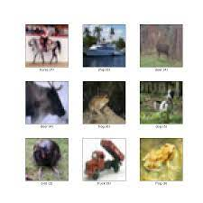

Proficiency Of The Programming Language

Some Of My Recent Projects

Restaurant Booking Application
As more restaurants incorporate digital transformation, online restaurant booking is becoming increasingly prevalent. With just one click, customers can order food without the hassle of physically going to the restaurant or calling to make reservations. As a part of my school project, I have developed a prototype of a restaurant reservation application that allows users to view and test the application's functionality.
Check it Out
CIFAR10 Object Recognition
Object Recognition is becoming increasingly popular in our digital world. Its applications, like distinguishing the addresses of parcels and recognizing handwritten digits, can be commonly found in our daily lives. For this example, I have developed an application using object recognition and the CIFAR10 package to differentiate between different types of objects.
Check it Out - jupyer notebookConstellation Animation
With the help of particle.js library, i'm able to create this animation. Some digital art is displayed on websites to give it a sophisticated look, while others may be showcased in immersive art exhibitions. The process of creating digital art often involves the use of mathematics, physics, and design in order to generate particle motion. Even making a slight adjustment to variables like colours, functions, and speeds can result in a significant difference in the final product.
Check it Out
Healthcare analysis
The healthcare sector is facing increasing pressure due to the rapid growth of the aging population, which brings a higher demand for medical services, long-term care, and chronic disease management. As more people live longer, healthcare systems must adapt to address complex age-related conditions. Many hospitals and clinics are struggling to keep up, leading to longer waiting times, overworked staff, and compromised patient care.
Check it Out - jupyer notebook